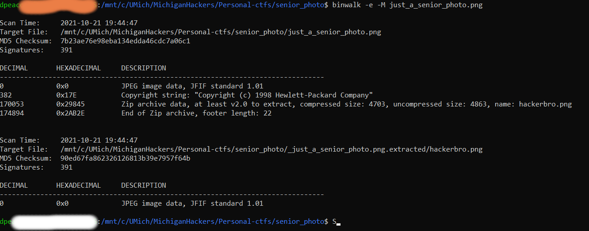
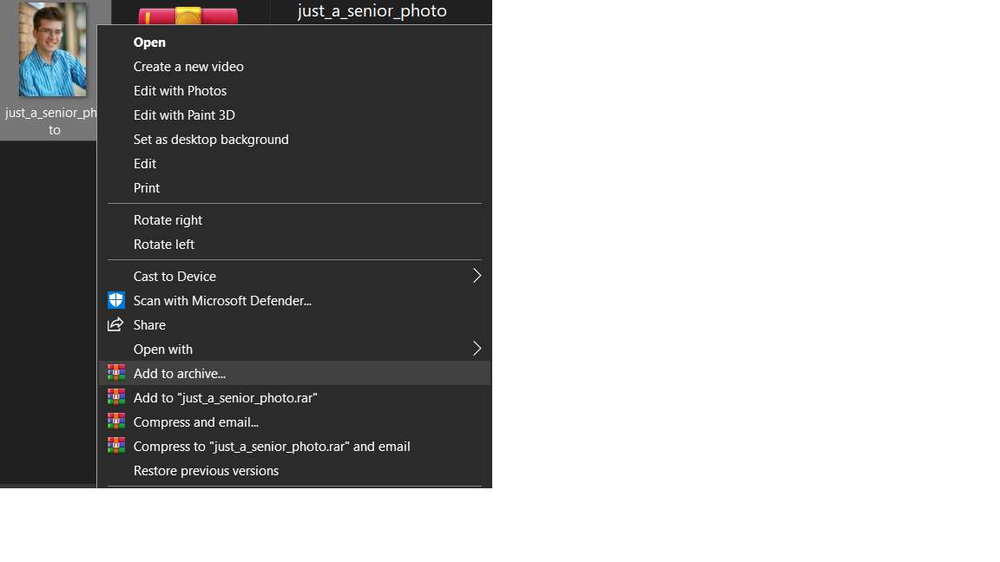

Forensics / Cryptography
Can you locate the flag in this senior photo?
Download just_a_senior_photo.png
Trying binwalk recursive carving (‘binwalk -e -M just_a_senior_photo.png’) in the command prompt reveals a hidden image, called ‘hackerbro.png’ is contained within the senior photo.

You can extract this image by clicking ‘Add to archive…’ in the File Explorer, then extracting the .png given.

The result is a folder containing both just_a_senior_photo.png and hackerbro.png.
Then, you can use a steganography decoding tool, such as Stegsolve, to reveal the encrypted flag, which appears as ‘CXSJV{0d_l4s4710d_w0d3_fx1ix1dw}’.
Great! This looks like the flag, but how do we decrypt it? You can use a caesar shift decoder to brute-force all possible shifts. Finally, the flag is revealed once you shift the encrypted text ROT 16.
MHCTF{0n_v4c4710n_g0n3_ph1sh1ng}